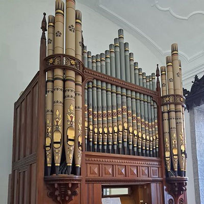

|


|
|
|
|
O órgão é um instrumento tão grandioso, antigo e imponente, que existem variações dentro do próprio instrumento.
O positivo (etimologicamente, de 'pousar') é um órgão com poucos registos, normalmente sem pedaleira, que, como uma peça de mobiliário, tem a facilidade de ser deslocável no espaço, tanto seja de uma casa, como de uma escola ou de uma igrejas. No espaço litúrgico, muitas vezes servia para o acompanhamento do cantochão. Na época barroca, como instrumento de baixo contínuo em pequenos conjuntos instrumentais.
O órgão de coro possui geralmente o formato de um armário, colocado junto ou perto ao lugar do coro, num espaço litúrgico. Com dimensões maiores do que um positivo, dado que não permite a deslocação no espaço como aquele, é direccionado sobretudo para o acompanhamento vocal de solistas e/ou coro, não possuindo registos de solo. Normalmente, recebe este nome, para distinguir do grande-órgão normalmente instalado no coro-alto, enquanto o órgão de coro foi instalado geralmente no transepto ou simplesmente junto ao lugar de um coro perto da assembleia.
O órgão barroco é o instrumento típico da época barroca, existente em diversas escolas de organaria nacionais (órgão italiano, órgão barroco francês, órgão ibérico, órgão alemão). Existem, ainda, órgãos ditos neobarrocos, que, sendo de construção recente, se basearam em modelos antigos ou históricos, pretendendo imitar as características técnicas, acústicas e mecânicas de uma determinada escola de organaria antiga.
O órgão romântico, pelos seus recursos sonoros, permite abordagem da literatura organística do período romântico (século XIX). Dotado de pelo menos uma secção expressiva. Possui, por regra, muitos fundos e poucas alíquotas. É rico famílias de cordas e registos harmónicos e octaviantes. Possui, pelo menos, um registo oscilante.